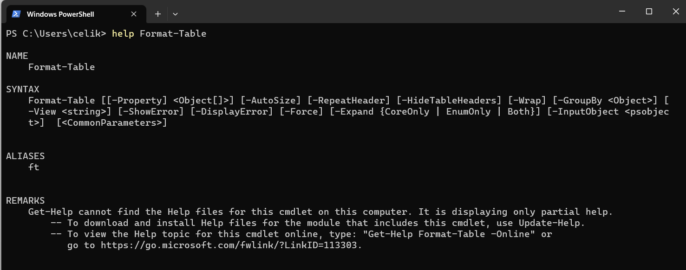

Format CMD-lets:
$files = Get-Process
$files.Length
$files | format-table -property name, id
Format-List:
[[-Property] <Object[]>]
[-GroupBy <Object>]
[-View <string>]
[-ShowError]
[-DisplayError]
[-Force]
[-Expand <string>]
[-InputObject <psobject>]
[<CommonParameters>]

SAVING OUTPUT:
#(yazılmak istenen şey) | Out-File (path)
Get-Process | Out-File D:/PowerShellApplications/test.txt
Get-Process | ConvertTo-HTML | Out-File D:/PowerShellApplications/test.htm
Get-Process | export-csv D:/PowerShellApplications/test.csv
invoke-expression D:/PowerShellApplications/test.csv
IMPORT OBJECT:
Powershell'de bir dosyayı import etmek için, onu bir variable içerisine atamamız lazım. Daha sonra da import komutu ile dosyayı alacağız.
NOT: Bu uygulama ile birlikte:
| Linked file: Census1000.csv |
$names = import-csv D:/PowerShellApplications/Census1000.csv
$names #Dosyanın içerisindeki bilgileri list içerisine kopyalar.
$names | format-table #Direkt olarak csv dosyasında gördüğümüz gibi verir.